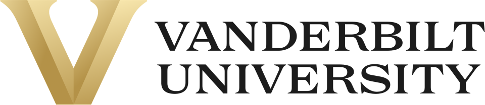

Interactive resume · updated Sep 2026Hover or tap anything marked
Special ed.
Software.
Research.
01 / THE TIMELINE
Four tracks, one thread.
Each bar marks when the role ran. Hover a bar for details; click it to open the full card.
02 / THE WORK
What I did, in detail.
These are the highlights I picked from both resumes. Hover a card for my role, dates, results, and links.
03 / TOOLKIT
Skills, and where
I used them.
Hover a skill to see which projects used it. The matching timeline bars will light up too.
04 / HONORS & PUBLICATION
Recognition.

PUBLISHED · YOUNG SCIENTIST JOURNAL, VANDERBILT UNIVERSITY · 2025Enhancing AAC Systems Through Artificial Intelligence: Parent and Family Perspective on Limitations and Solutions ↗05 / EDUCATION